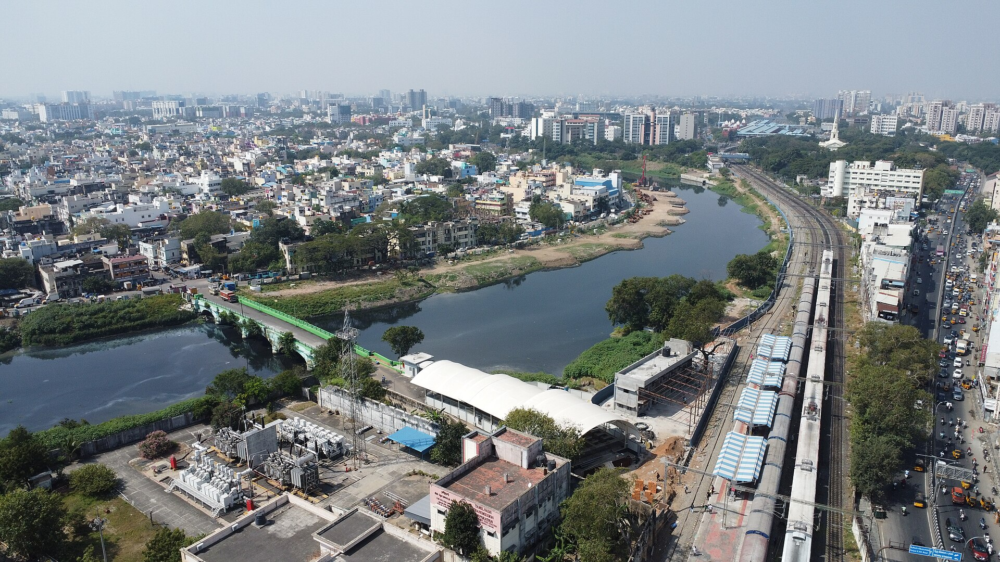
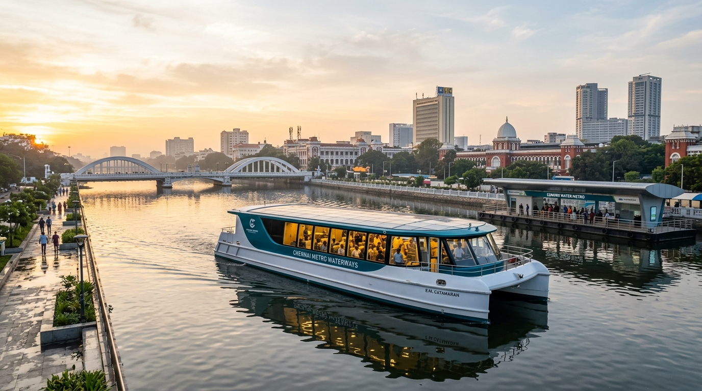
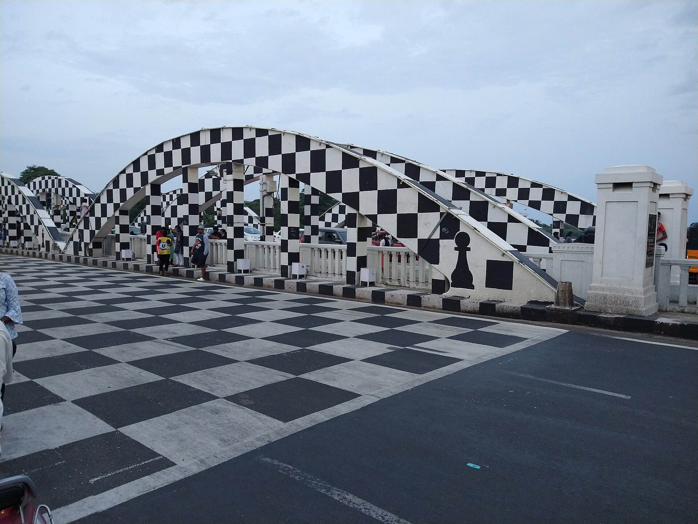
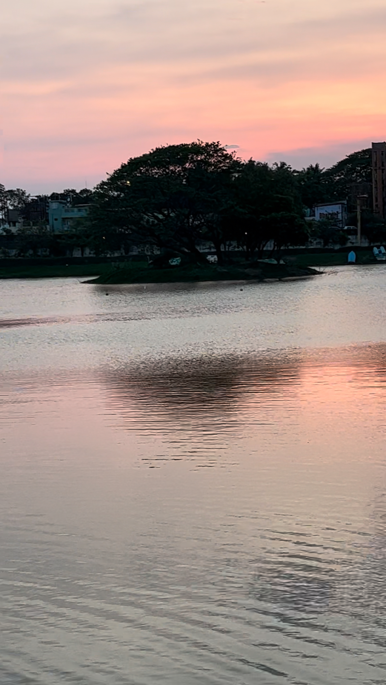
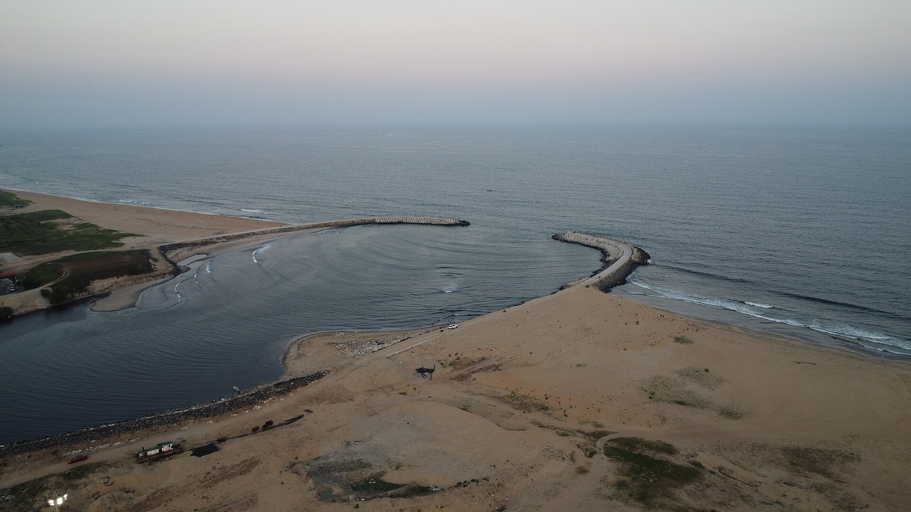
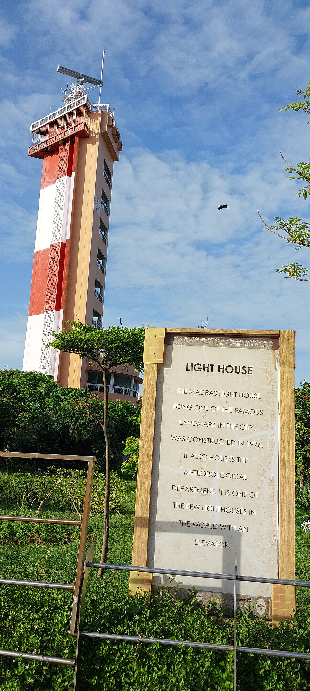

NEERMETRO
Explore a simpler way to travel across Chennai's waterways.
NEERMETRO brings water transport information, route discovery, nearby terminals, and journey planning into one simple platform — helping people find the right route from where they are to where they need to go.
Find nearby water transport terminals and active river quays across Chennai's Cooum corridor.
Find your destination with text, station code, or natural voice in English, தமிழ், or Tanglish.
Combine water transit with CMRL Metro, MTC buses, and suburban railway lines for the whole trip.
Understand scheduled lines, real-time crossing times, and transparent commuter tariffs from ₹15.
More Than a Route.
A Connection.
Chennai is a city shaped by its roads, railways, and waterways. But discovering and using water-based transportation should not feel complicated.
NEERMETRO is designed to make water transport easier to discover, understand, and access.
From finding a nearby terminal to understanding your route, NEERMETRO brings essential journey information together in one place.
One destination. Multiple connections. One simple journey.

The Daily Chennai Commute, Reimagined
Every Chennaite knows the struggle of peak-hour traffic along Poonamallee High Road and Mount Road. NEERMETRO transforms the city's underutilized waterways into peaceful, predictable commuter pathways.
Escaping the EVR Periyar Salai Bottleneck
From College Lab Straight to Marina Beach Breeze
Train Arrivals Without the Auto-Fare Haggling
Monsoon Resilience When Low-Lying Roads Flood
The Meaning Behind NEERMETRO
The NEERMETRO logo combines water, transportation, Chennai's identity, and connectivity into one unified visual symbol.
The Circular Waterform Continuous Motion
The large blue circular form represents water and continuous movement. It also resembles a connecting pathway, representing how NEERMETRO brings different places and people together across Chennai.
The Ferry Core Transport
At the centre is the water metro / ferry, representing the heart of the platform — water-based public transportation. The boat moving forward represents:
The Waves Coastal Identity
The waves at the bottom represent Chennai's waterways and coastal identity. They also create a sense of movement, showing that transportation is not just about reaching a destination — it is about keeping the entire city connected.
Chennai's Cultural Identity Heritage & Skyline
The skyline combines recognizable architectural elements representing Chennai and Tamil Nadu's diverse cultural landscape. The temple architecture, mosque/minaret, church, bridge, birds, palm trees, and water together communicate:
The Bridge Connection & Napier Arches
The bridge represents connection. It visually reinforces the central idea of NEERMETRO: Connecting people to places through waterways.
The bridge arches in the symbol specifically evoke Chennai's historic Napier Bridge spanning the Cooum estuary where the river meets the Bay of Bengal at Marina Beach.
The Blue Gradient Color Architecture
The blue tones represent: Water · Trust · Mobility · Technology · Clean transportation · A modern Chennai. The transition from deep ocean blue to cyan gives the identity a sense of depth and movement.
Chennai Through Its Waterways
From lush inland eco-basins to historic colonial bridges and the open Bay of Bengal coastline, discover the iconic landmarks along NEERMETRO's water corridors.

Modern Electric-Hybrid Catamarans
Lightweight twin-hull catamarans operating with zero engine noise, zero diesel fumes, and wheelchair-accessible level boarding ramps. Designed specifically for optimal navigation in shallow urban waterways.

Historic Napier Bridge Arches
The iconic bridge with its distinctive chessboard arches where the Cooum joins the Bay of Bengal — visually commemorated in the NEERMETRO logo symbol.

Chetpet Eco-Basin & Waterfront Quay
A serene waterfront oasis in the middle of bustling central Chennai. Features tranquil sunset vistas, pedestrian trails, and convenient transfers to Chetpet Suburban Station.

Bay of Bengal River Confluence
Where freshwater meets ocean tides along the Coromandel coast. The wide natural basin allows scenic catamaran turns with refreshing sea breezes for evening commuters.

Chennai Lighthouse & Marina Promenade
Asia's only lighthouse equipped with a public elevator, guiding maritime navigation along the coastline and serving as a landmark gateway for water transit visitors.
From Where You Are to Where You Want to Be
NEERMETRO is built around a simple idea: People shouldn't need to understand the entire transport network before they can use it. They should simply be able to say:
NEERMETRO helps turn that intention into a journey.
Discover
Find water terminals and river routes around you.
Search
Enter your destination using text or natural voice.
Understand
See available routes, travel time, fares, and connections clearly.
Connect
Combine water transport with Metro, bus, and rail to complete the journey.
Arrive
Follow simple journey guidance until you reach your destination.
Road vs. Water Metro: The Everyday Chennai Contrast
How does traveling across Chennai change when you choose the river? Here is a direct side-by-side comparison for the popular Koyambedu to Egmore transit corridor (6.7 km).
| Transit Parameter | Road Transit (EVR Periyar Salai) | NEERMETRO (Line C2 Central Express) |
|---|---|---|
| Average Travel Time | 45 to 65 minutes (Severe peak-hour congestion) | 18 minutes (Fixed, non-stop river channel) |
| Commuter Cost | ₹180–₹260 (Auto/Cab) · ₹25–₹35 (Crowded bus) | ₹36 Standard · ₹18 Student Concession (50%) |
| Traffic Signals & Stoppages | 14 red traffic signals & U-turn bottlenecks | Zero traffic signals — continuous waterway right-of-way |
| Commuter Comfort | Exhaust fumes, 38°C midday humidity, continuous horn noise | Air-conditioned cabin, panoramic water views, silent propulsion, USB charging |
| Weather Reliability | Underpasses prone to waterlogging during monsoon downpours | Hydro-engineered floating pontoons adapt to river water levels |
| Carbon Footprint | ~2.1 kg CO₂ per private auto trip | ~0.18 kg CO₂ per passenger (Clean battery-electric power) |
Just Say Where You Want to Go
Typing unfamiliar place names can be difficult. NEERMETRO makes route discovery natural with voice-based search.
NEERMETRO converts the spoken input into an instant route search using its local location database and matching system.
The Right Route Starts With the Right Information
NEERMETRO brings essential journey parameters together to give passengers complete clarity before boarding:
Nearby terminals
Find water transport access points around your current coordinates.
Route options
Understand where the service can take you across the city.
Travel time
Know approximately how long your journey takes with zero traffic stops.
Fare information
Understand the expected commuter tariff starting at ₹15.
Connections
Discover how water transport connects with CMRL Metro, rail, and MTC buses.
Service status
See whether a route is operating normally, delayed, or affected by tides.
Making Water Transport Easier for Everyone
Simple
No complicated transport maps to understand. Pick a destination and start moving.
Accessible
Designed around voice, clear information, zero-step pontoon boarding, and simple navigation.
Connected
Brings water routes together with Metro, Suburban rail, and MTC bus interchanges.
Local
Designed around Chennai's places, people, language (English, தமிழ், Tanglish), and waterways.
Future Ready
A digital platform designed to make water-based mobility easier to discover and use.
Chennai Moves Differently When Its Waterways Connect.
From neighbourhoods to terminals, from roads to waterways, NEERMETRO brings the pieces of a journey together.
Discover the Water. Connect the City.